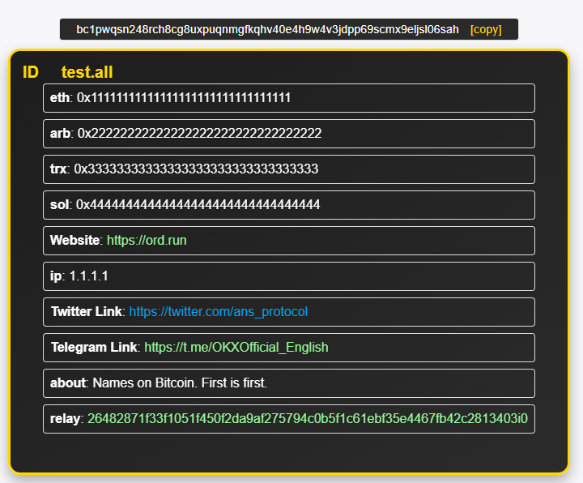
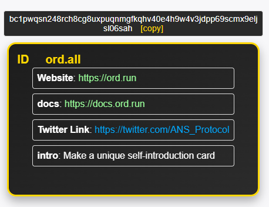

Introduction
All Name System (ANS)
A Decentralized Domain System Built on Ordinal Theory
What is ANS?
The All Name System, or ANS, represents a groundbreaking decentralized domain system, constructed atop the Ordinal Theory protocol on the Bitcoin blockchain.
The Significance of "All"
In ANS, the term “All” is more than just a word. It embodies our core philosophy and commitment: to provide decentralized domain resolutions for everything. Be it Bitcoin wallet addresses, social media links, or any other digital identity, ANS is dedicated to offering a straightforward, distinct, and decentralized naming solution.
Why the ".all" Suffix?
".all" is not just a domain suffix. It stands as the hallmark of the ANS system, symbolizing our vision: to forge an open, inclusive, and boundless digital realm. Within this realm, everyone can effortlessly create and manage domain names for their digital assets and identities, devoid of intermediaries or intricate procedures.
The Edge of ANS
Merging the decentralization, security, and immutability of Bitcoin, ANS presents users with a domain resolution tool that's both simple and potent. It not only aids users in managing and sharing their digital assets with ease but also provides developers with a robust and reliable foundation for building the next generation of decentralized applications.
For more details on ordinal theory, see the overview.
Overview of the All Name System (ANS)
System Architecture
- Built on Bitcoin: ANS leverages the decentralization, security, and immutability of Bitcoin to offer a robust domain system.
- Integration with Ordinal Theory: Through the Ordinal Theory protocol, ANS assigns unique domain names to each Bitcoin wallet address.
Core Features
- Decentralized Domain Registration: Users can easily register a ".all" domain name for their Bitcoin wallet addresses.
- Subdomain Resolutions: ANS supports subdomain resolutions, allowing users to add multiple subdomains to their primary domain.
- Multi-chain Support: Beyond Bitcoin addresses, ANS also facilitates resolutions for other blockchain addresses like ETH, ARB, TRX, and more.
- Social Media Links: Users can associate social media links, such as Twitter or Telegram, with their domain names.
How It Works
- Domain Minting: Users register or update domain names by minting a new inscription.
- Decentralized Resolutions: All domain resolution requests are conducted directly on the Bitcoin blockchain, ensuring authenticity and tamper-resistance.
- Centralized Interface: While data storage is decentralized, ANS offers a centralized resolution website, simplifying domain querying and resolution.
Use Cases
- Simplified Transactions: Users can conduct Bitcoin transactions using easy-to-remember domain names instead of complex wallet addresses.
- Decentralized Identity: ANS can serve as a decentralized identity system, allowing users to craft unique domain names for their digital identities.
- Digital Asset Management: Developers can utilize ANS to create distinct domain names for decentralized applications, such as DApps and NFTs.
Advantages of ANS
- Security: With all data stored on the Bitcoin blockchain, ANS delivers a secure and immutable domain system.
- Flexibility: ANS's design lets users effortlessly add, modify, or delete domain information.
- Openness: As an open system, ANS encourages community involvement and innovation.
Examples of Registration and Update Inscriptions The domain registration and resolution approach in ANS is inspired by the "sats names" domain system. Here, we provide sample formats to help users understand how to craft inscriptions for domain registration and updates.
ANS Namespace Syntax
The syntax below applies to all ANS namespaces, for example .all, plus all future namespaces.
New names can be minted (inscribed for the first time) as ordinals with only a Bitcoin transaction. This process is open to anyone that can inscribe.
Registering Names
Simple Registration
To register a new name within the All Name System, simply inscribe an ordinal containing your desired name. Here's an example:
test.all
⚠️ Registration Limitations
These rules apply to all namespaces and names:
- Only the first instance of each name/namespace is valid.
- Only one name operation per ordinal inscription.
- Any UTF-8 character is valid.
- Capitalization does not matter. All names/namespaces will be indexed as lowercase.
- No spaces are permitted within a name.
All Name System (ANS) Documentation
Updating Names in the All Name System (ANS)
To update an existing domain within the All Name System, inscribe an ordinal with the updated details for your domain. Below is the format and description of each field:
Example1 Update Format
{
"p": "ans",
"op": "update",
"ns": "all",
"name": "test.all",
"eth": "0x11111111111111111111111111111111",
"arb": "0x22222222222222222222222222222222",
"trx": "0x33333333333333333333333333333333",
"sol": "0x44444444444444444444444444444444",
"url": "https://ord.run",
"ip": "1.1.1.1",
"tw": "https://twitter.com/ans_protocol",
"tg": "https://t.me/OKXOfficial_English",
"about": "Names on Bitcoin. First is first.",
"relay": "26482871f33f1051f450f2da9af275794c0b5f1c61ebf35e4467fb42c2813403i0"
}
When the updating inscription is inscribed and sent to yourself, you can get the display card information by visiting https://ord.run/test.

Example2 Update Format
{
"p": "ans",
"op": "update",
"ns": "all",
"name": "ord.all",
"url": "https://ord.run",
"docs": "https://docs.ord.run",
"tw": "https://twitter.com/ANS_Protocol",
"intro": "Make a unique self-introduction card"
}
When the updating inscription is inscribed and sent to yourself, you can get the display card information by visiting https://ord.run/ord.

Field Descriptions
| Field | Description |
|---|---|
p | Protocol identifier. For ANS, this should always be "ans". |
op | Operation type. For updates, this should be "update". |
ns | Namespace. For the main ANS system, this is "all". |
name | The full domain name you wish to update, including the namespace suffix (e.g., "test.all"). |
... | Additional fields can be added as needed. These can include predefined fields like "eth", "url", etc., or custom subdomains defined by the user. |
After the updating inscription is completed, you need to transfer this inscription to yourself. You can find the reasons in the FAQ section.
Using the ANS Website for Domain Resolutions
The All Name System (ANS) website offers a user-friendly interface to resolve domain names and retrieve associated details. Here's a step-by-step guide on how to use the website for domain resolutions:
Basic Domain Resolution
- Navigate to the ANS Website: Open your web browser and go to
https://ord.run/. - Enter the Domain Name: In the address bar, after the
/, type the domain name you wish to resolve. For instance, if you want to resolve the domain "test", you would enterhttps://ord.run/test.
Resolving Subdomains
If the domain has associated subdomains, you can retrieve specific details by appending the subdomain after the domain name:
- Navigate to the ANS Website: Open your web browser and go to
https://ord.run/. - Enter the Domain and Subdomain: In the address bar, after the
/, type the domain name followed by another/and then the subdomain. For example, to retrieve the Twitter link for the domain "test", you would enterhttps://ord.run/test/tw.
What to Expect
- No Subdomain or Invalid Subdomain: If you don't specify a subdomain or if the subdomain you entered isn't recognized, the website will display the Bitcoin address of the domain owner.
- URL Type Subdomain: If the subdomain corresponds to a URL, the website will automatically redirect you to that URL. For instance,
https://ord.run/test/twmight redirect you to a Twitter page. - Non-URL Type Subdomain: If the subdomain isn't a URL, the website will show the content associated with that subdomain. For example,
https://ord.run/test/ethmight display a specific Ethereum address.
Remember, the ANS system is designed to be intuitive and user-friendly. Even if you're not tech-savvy, you can easily navigate and retrieve information using the steps above.
Frequently Asked Questions (FAQ)
How does ANS ensure the authenticity of domain updates?
In the ANS system, while anyone can mint an update inscription, there's a mechanism in place to ensure that only the legitimate owner of a domain can authorize and apply these updates.
When an update inscription is minted and sent to the domain owner's wallet, it's essential for the domain owner to then send this inscription to their own address. This creates a transaction where both the input and output addresses are the same, indicating the owner's acknowledgment and acceptance of the update.
During resolution, ANS checks two things:
- Whether the
address_toof the inscription is the domain owner's address, ensuring the inscription is currently in the rightful owner's wallet. - Whether the
address_fromis also the domain owner's address, confirming that the owner has authorized the update by sending it to themselves.
This self-verification mechanism ensures that only the true owner of a domain can update its resolution content, preventing unauthorized or malicious changes.